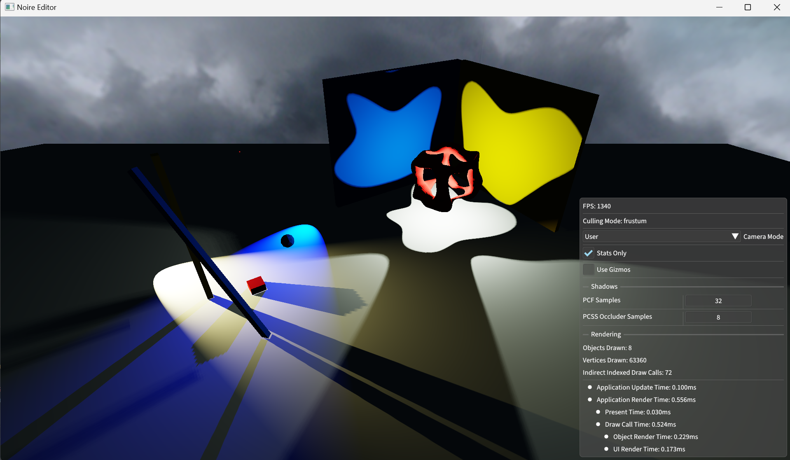

Building on top of A2, Noire Engine 2 is now a multi-threaded forward renderer that supports PCSS on spotlights, pointlights, and cascaded directional lights.
A bunch of astroids. With a total of 3 spot lights and 2 point lights.
All models and textures are created by myself
Cover, at least:
Lights are components, and are de-serialized as usual from s72 files, and loaded into the
scene on an entity.
how data moves from "LIGHT"s stored in an s72 file to the in-memory representation used by your renderer;
I left power and tint separate, but i could multiply them together i suppose.
I used storage buffers to pass light uniforms to the GPU, streamed per frame, exacly as we stream transform informations.
We can see for small lights the frame delays increase linearly, but once the lights get many, the performance decrease looks exponential. For 77 point lights at 1024x1024 cube-map shadow resolution, 32 PCF sampling and 8 occluder search PCSS, I was able to obtain 20FPS performance.
I bind shadowmap as 2D textures to a descriptor indexed array, allowing unlimited lights to be spawned at scene start.
However, this meant each shadow is rendered on a separate renderpass. This could be better handled with a shadow atlas.
I reduce artifacts by rendering backfaces, using cosine-angle-weighted bias (less bias as angle gets steeper).
The PCF samples from a Poisson64 disk, and the user may choose to change the number of samples from 1 up to 64.
Note: I did not make the shadow resolution a variable. This meant 1024x1024 for point and spot lights, and 2048 for cascaded directional lights.
PCSS is just dynamic PCF, so underneath it just estimates the penumbra size by finding occluders (you can tune this sample as well) and then runs PCF based on the radius we got.
Directional lights pushes, by default, 4 shadowmaps to the shaders.
The shadow map cascade is calculated based on a tight logarithmic fitting of the camera frustum. See Light.cpp on more detail of how this is calculated on the CPU.
Sadly no images showing how the frustum fits the lightspaces is shown.
Point lights pushes 6 shadowmaps, instead of a cubemap. The reason for this is the simplicity of a single descriptor holding every shadowmap in the engine. In the fragment shader, a cartesian direction to cube UV conversion is done to find which face to sample from.
 PCSS for point lights. Showing point lights and no artifacts around corners.
I implemented a simple secondary command buffer recording scheme that runs all the shadow recordings in separate threads in parallel.
Lets say you are rendering 32 shadow maps. Then the engine spawns 32 threads on the CPU to record each of those draw calls into a separate secondary command buffer.
Before submitting to the primary command buffer, all the threads are joined.
But tbh the performance wasnt that acknowledgable anyways. maybe its bad.
I liked this assignment